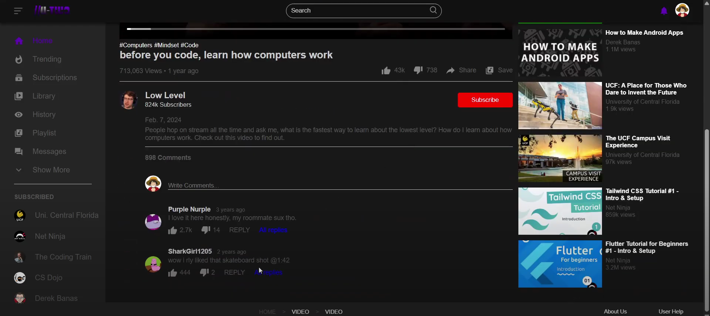

Overview
To learn about user experience (UX) lifecycle development, including analysis, design, development, and evaluation, with a focus on progressive prototypes and rapid iterative testing and evaluation
Description
“The U-Two interface is a user-centric video browsing and management platform that reimagines the YouTube experience by minimizing dynamic clutter. It provides an intuitive, responsive design that allows users to quickly navigate content categories, manage their video playlists, and access detailed video information—all through a set of consistent, accessible interactive features that prioritize simplicity and efficient information access.”
Project Image
Skills Learned
- Information Architecture
- Technical and Communication Skills
- Rapid Iteractive Testing and Evaluation
- User Research and Analysis